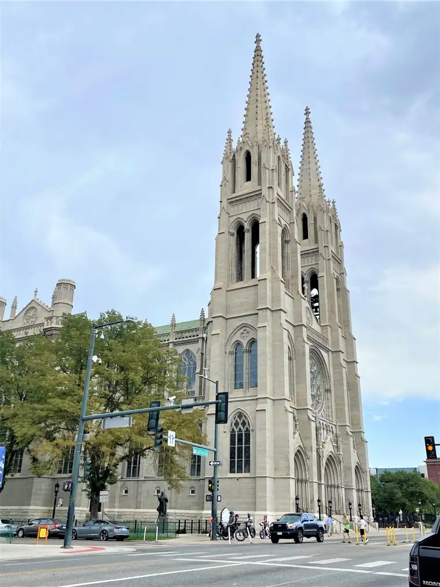
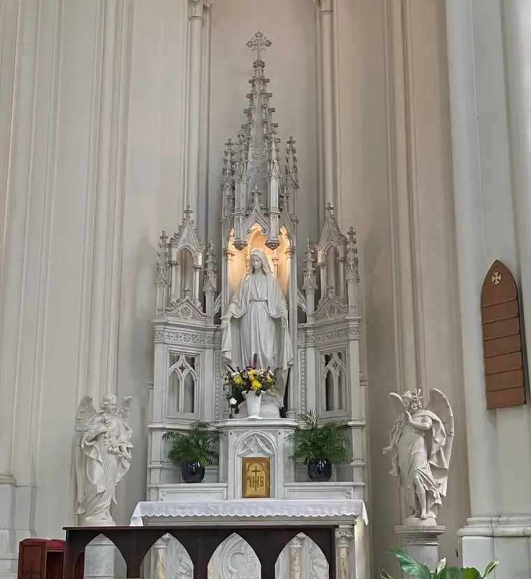
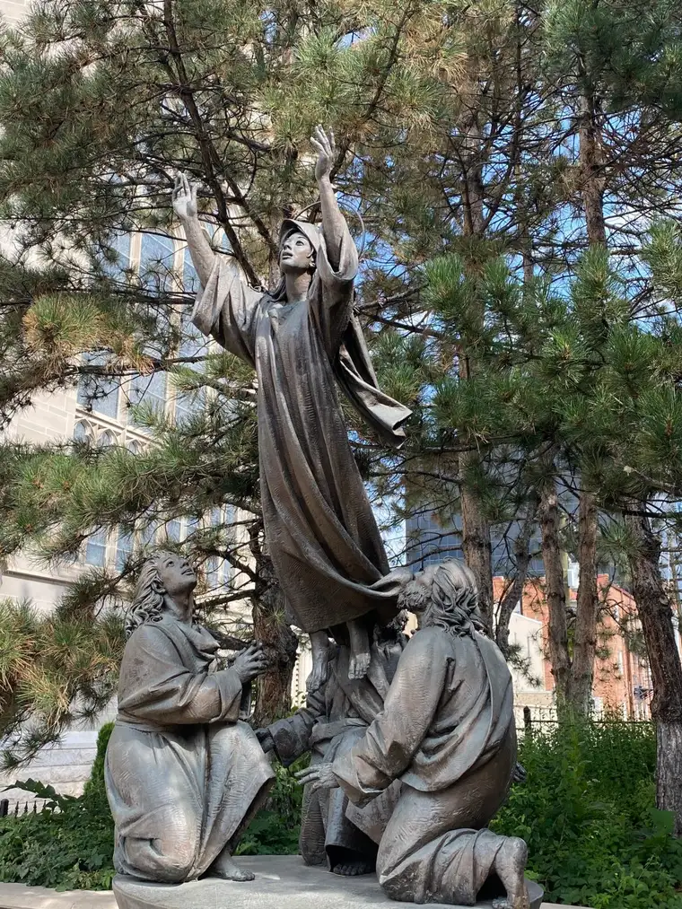
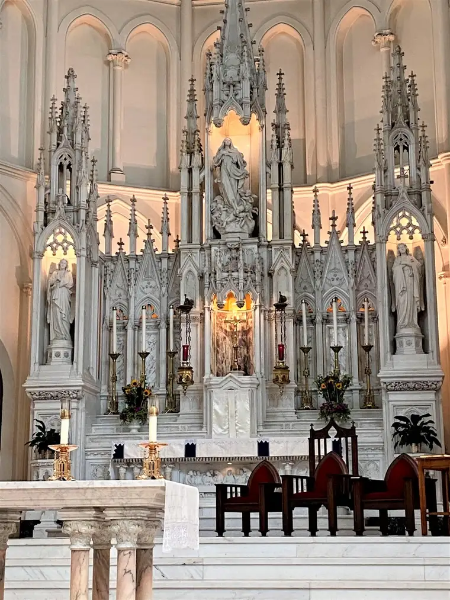
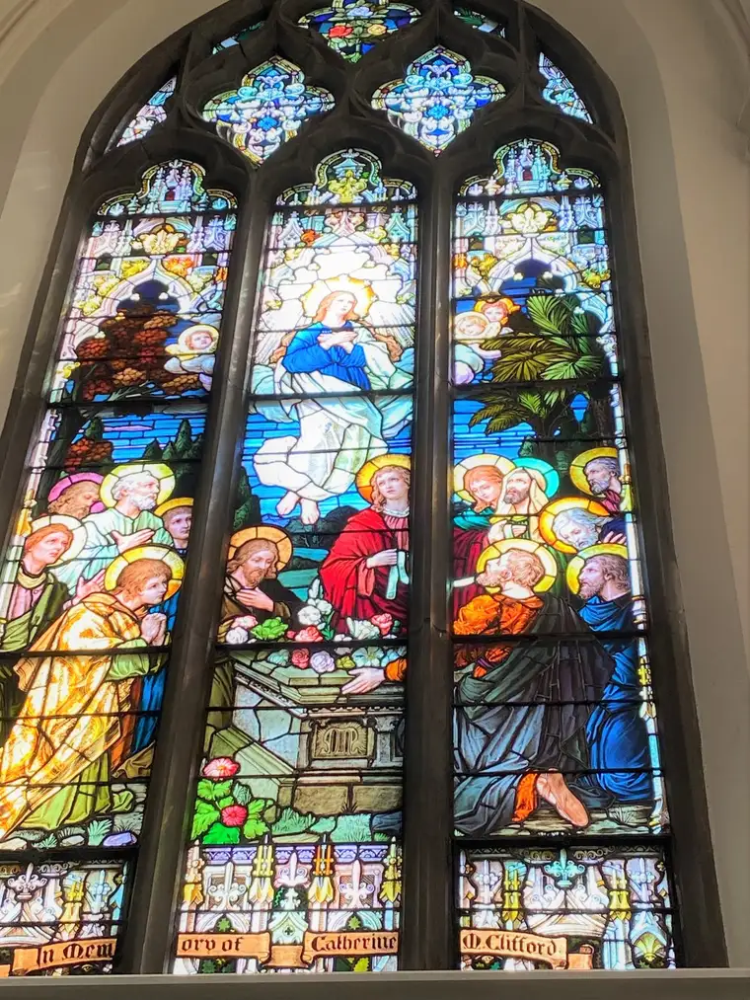

During his homily on the Solemnity of the Assumption, Fr. Samuel Morehead, pastor of Denver’s Basilica of the Immaculate Conception, said he hoped to see a long line at Bonnie Brae Ice Cream after Mass. “And better yet, get a double scoop,” he challenged parishioners.

“It is good to be human,” he’d said earlier, explaining the Assumption and why we celebrate it. His challenge to get ice cream came just after explaining that, being human, we are not happy unless we are doing what humans are made to do: to live fully as both body and spirit.
Which might require a trip to the ice-cream shop with loved ones from time to time. “When we are less than what we were made to be by God, we’re miserable,” Fr. Morehead said, noting that we need to be fed in all ways: physically, spiritually, materially and sacramentally. “Because you are human, you are not meant to be an angel,” he said. “You are meant to be a saint.”

The Blessed Virgin Mary was taken up to the celestial heights, body and soul, he reminded. She, too, was fully human, and so, because of God’s grace, and despite our weaknesses, we can say, “It is good to be human.”
From the Church’s earliest days
The Assumption of the Blessed Virgin Mary is the oldest Marian feast day in Church history, Fr. Morehead said, celebrated from Her earliest days. “You’ve come to the right place on the right day,” he said to all, including my mother and I, there from North Dakota on vacation, noting, “This is Mary’s cathedral, the Cathedral of the Immaculate Conception.”

Mary was conceived immaculately without sin in the womb of her mother, Anne, he said, so that she could in turn conceive Jesus miraculously. “And because Mary knew not sin…the Church has always celebrated the fact that at the end of her natural life, Mary was taken up body and soul…into heavenly glory.”
Even some non-Catholics recognize the significance of celebrating this, Fr. Morehead pointed out, reading the first stanza of William Wordsworth’s poem, “The Virgin.”
Mother! whose virgin bosom was uncrost
With the least shade of thought to sin allied;
Woman! above all women glorified,
Our tainted nature’s solitary boast…
“The Blessed Virgin Mary is our tainted nature’s solitary boast,” he repeated, applying this miracle to our lives. Though we, too, are “all human,” unlike her Son, both human and divine, we have transformative grace at our disposal. Through the Incarnation, our humanity is transformed, raised and glorified, and even divinized. “You and I are made godlike, along with the Blessed Virgin Mary and all the saints.”

Modern mis-takes
The celebration also reminds us that we have been body and soul from the beginning; neither body nor soul predated the other. “God made you in an instantaneous creation, body and soul all at once,” Fr. Morehead said. “You have never been just one or the other.”
People are equally afraid of corpses and ghosts, he said, because corpses are bodies without souls, and ghosts are souls without bodies. “It’s not enough that we should just have souls,” he said, though it’s a good start. We, too, have a resurrection to anticipate, complete with archangels blowing trumpets; a time when “every tomb and grave will be opened, and every body and soul will be put back together.”
But in our age, heresy has proliferated through an attempt to separate the two. The spiritualists say the soul reigns, while the materialists say it’s the body. Both have it wrong, Fr. Morehouse insisted. “In the Incarnation, God suffered and died in a body, and ascended into glory,” showing us, “It’s good to unite body and soul.”
Morehead said that just as spiritualists “slough off” anything material, the materialists won’t consider anything spiritual as real. “We start worshipping not the creator but the creation,” and health and fitness become the gods we worship.
Even in beautiful Colorado, he said, exemplifying this by recalling Archbishop Chaput’s words during his years at the basilica. “He once said, ‘This is not our cathedral. We’ve built one bigger,’ then pointed to the football stadium across the way. What we build shows what we worship.”
It is in this cathedral, however, Fr. Morehead said, where the true God is to be worshipped, in order to “bring you alive in all that really matters…body and soul together.” To deny this, he said, is to deny God.
Through his Incarnation, Jesus transformed our nature, he reminded, and in her womb, Mary harbored the Ark of the Covenant.

He encouraged parishioners to “let your mind wander in this place,” because it is through our senses that we can better understand reality. Fr. Morehead then pointed out two stained glass creations: one of the Visitation, the other of the Assumption, on east and west walls of the basilica interior. “You and I are body and souls, and we need to look and taste and feel,” he said, to experience the smells and bells. “Body and soul: it’s the two together that Christ came to save.”
After suggesting that everyone run out for ice cream, Morehead ended with a prayer: “Thank you Lord for lifting up Mary. Thank you, God, for doing the same, even now, to me.”
Q4U: Which, if any, of Fr. Morehead’s takeaways on the Assumption resonated with you?